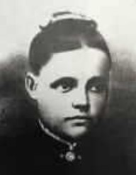

Född 20 sep 1944 i Norrköpings Sankt Olai (E) 1 .
Född 24 aug 1909 i Udden, Bogsten, Drothem (E) 2 .
Död 3 okt 1995 på Skönbergagatan 36, Gård 1, Kv Lagmannen, Söderköping, Sankt Laurentii (E) 3 .
Född 4 aug 1868 i Isdalen, Tomtaholm, Drothem (E) 4 .
Död 22 feb 1918 i Udden, Bogsten, Drothem (E) 3 .

FM Anna Charlotta Karlsdotter.Född 1 okt 1870 i Nystugan, Kalerum, Gryt (E) 5 .
Död 22 maj 1945 i Udden, Bogsten, Drothem (E) 3 .
FMF Karl Peter Karlsson.

Född 27 feb 1837 i Käggla/Kägglö, Tryserum (E) 6 .
Död 23 feb 1904 i Hästhagen, Spolstad, Gårdeby (E) 7 .
FMM Anna Sofia Svensdotter.
Född 21 apr 1848 i Björklund, Rullerum, Ringarum (E) 8 .
Död 8 jul 1932 i Hagsätter, Halleby, Skärkind (E) 9 .
Född 15 maj 1912 i Ringarum (E) 10 .
Död 2 sep 1991 på Skönbergagatan 36, Gård 1, Kv Lagmannen, Söderköping, Sankt Laurentii (E) 3 .